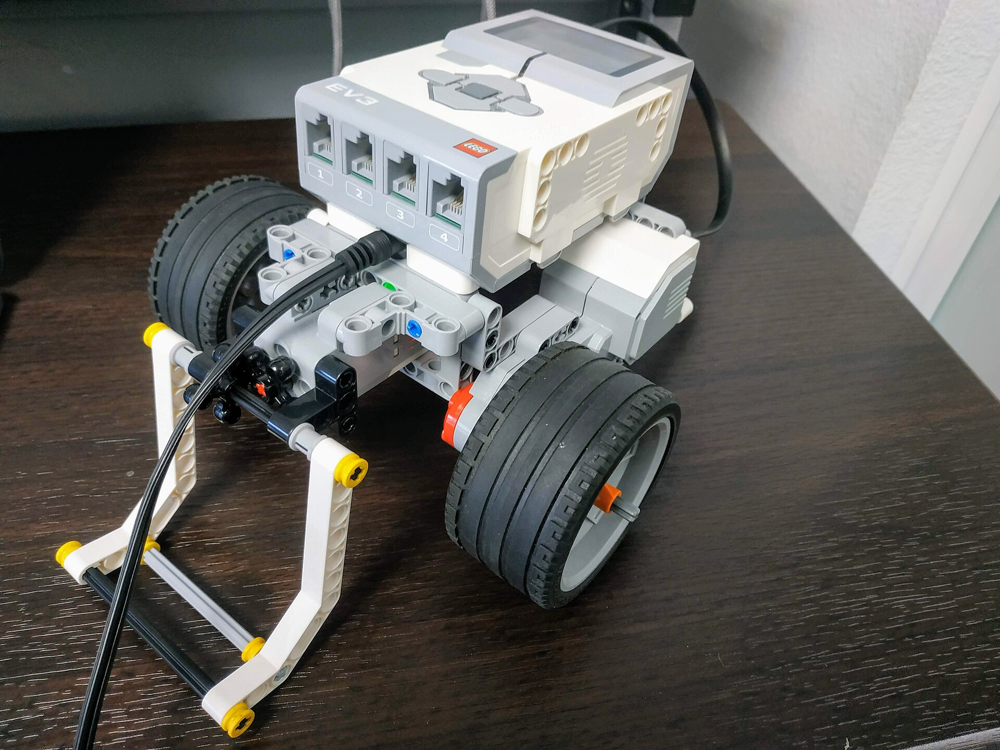
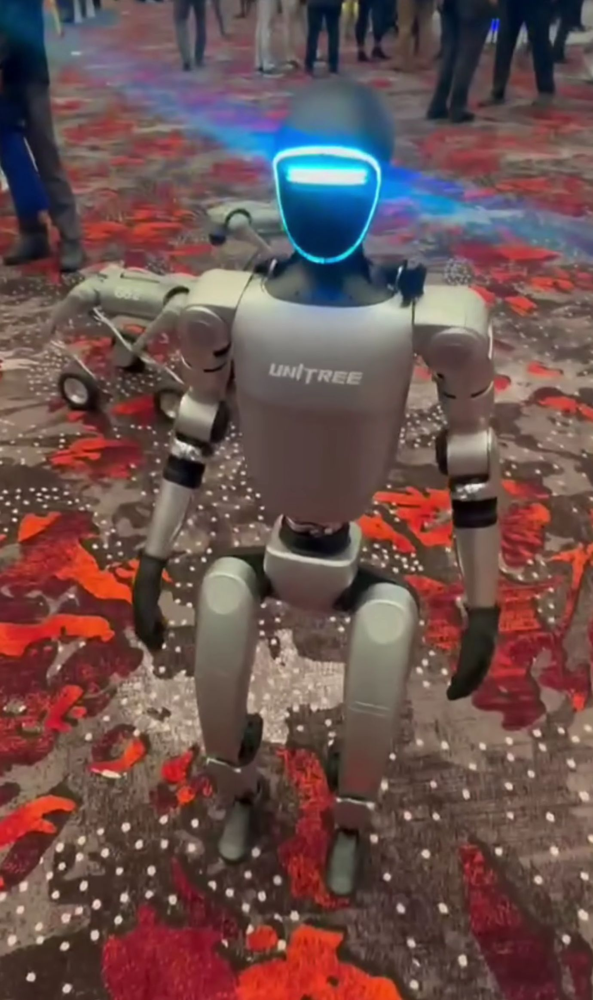
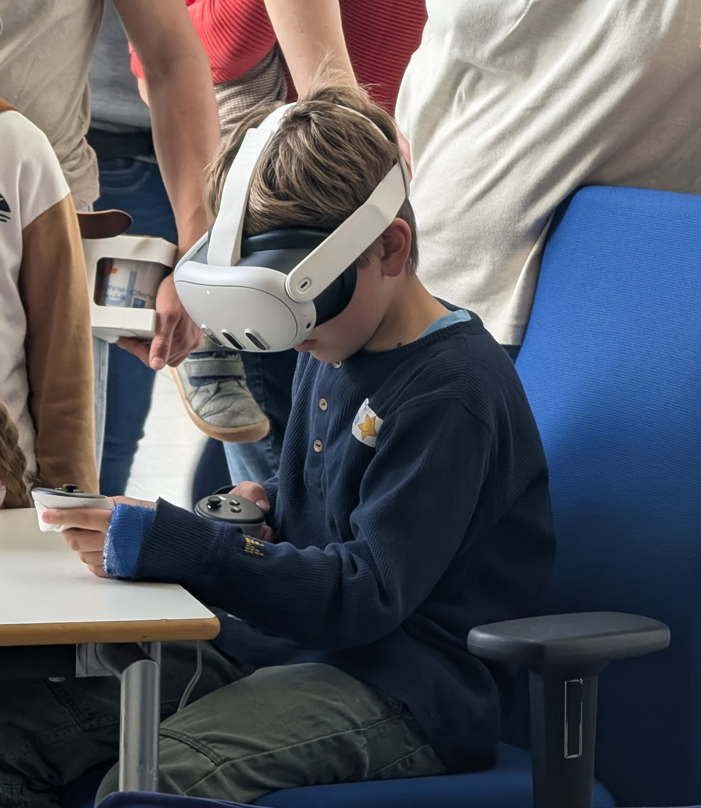
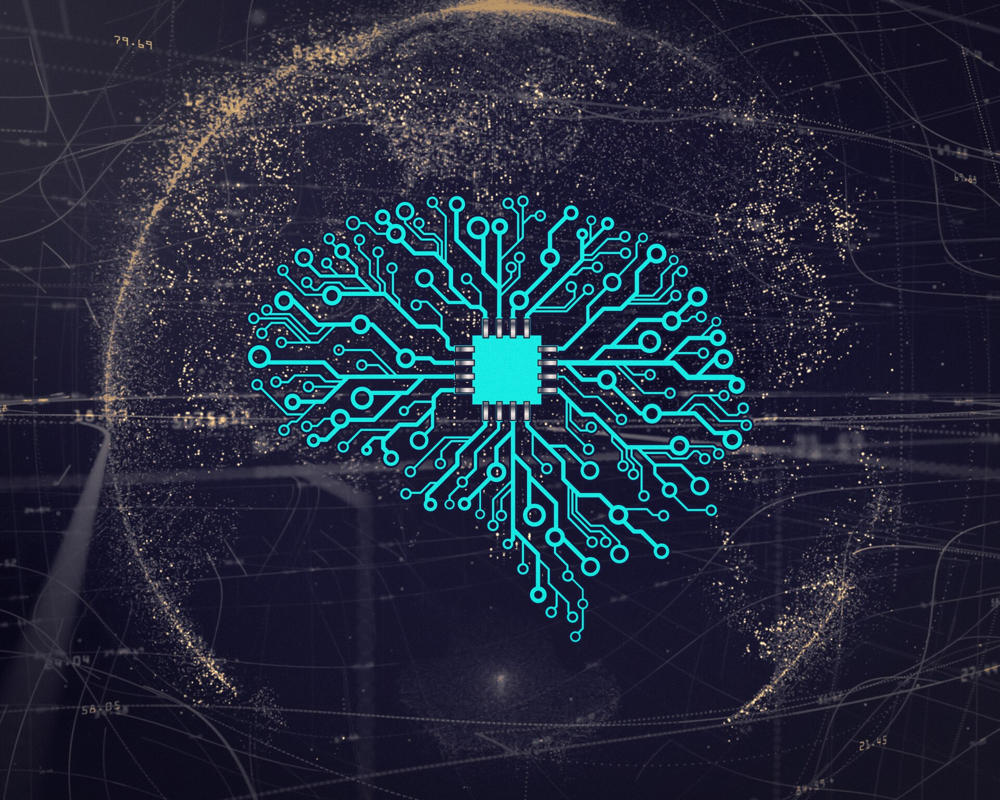
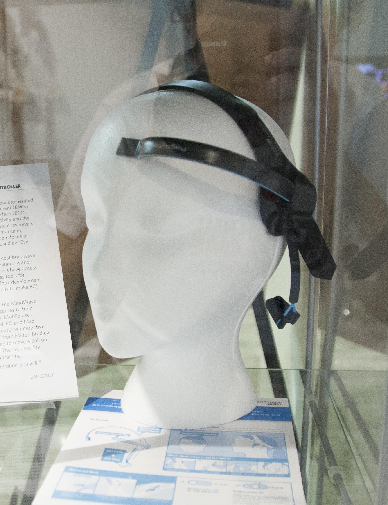
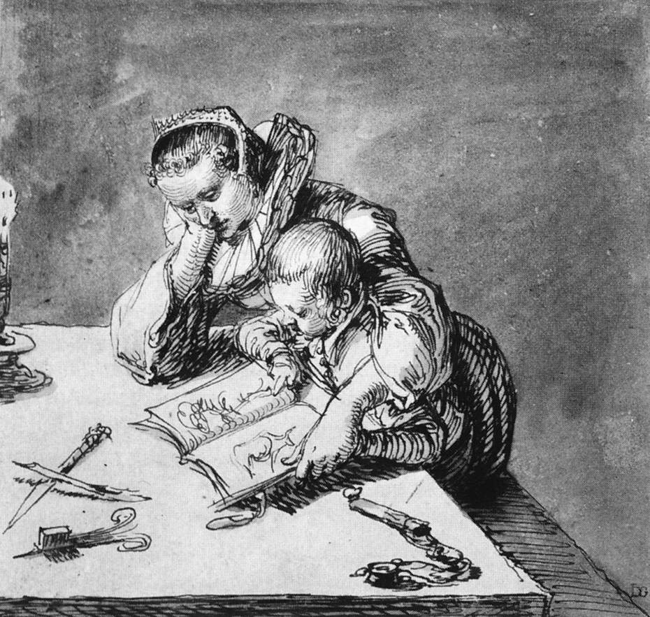

„Prašau išsitraukti telefoną. Šiandien vienintelį kartą pats to prašau: jis bus jūsų balsas." Kol jungiasi: kas jūs šiandien? Lauk, kol 📱 skaičius sustos. 75 s.
Jei nėra interneto
Klausimus užduok balsu: „Pakelkite rankas".
Telefonas čia yra įrankis su aiškiu tikslu. Tai ir yra etiketas.
Kas aš
Kris Vas
13 metų kuriu būrelius vaikams. Robotikos Akademijos ir ExoClass bendraįkūrėjas. Kuriu pamokas, žaidimus, testus ir įrankius tėvams.
Kasdien matau, kaip vaikai kuria su technologijomis. Ir kaip technologijos kartais kuria juos.
Atvirai: būreliai yra mano darbas. Šiandien nieko neparduodu. Visi duomenys čia apie bet kokius būrelius ir šeimas, ne apie mūsų.
Su kuo dirbu

LEGO Education robotai
🐢
Robotai 3–4 metų vaikams

Humanoidai robotai

VR ir XR

DI įrankiai

Neurotechnologijos
Todėl ir kalbu: technologijas myliu. Bet joms reikia manierų.
80 s. „Esu ne prieš technologijas. Esu tas, kuris jas atneša vaikams. Todėl matau ir kitą pusę." Jei nori: tavo disleksijos istorija viena eilute. Niekada „kaip tėvas".
Klausimas 1
Pagal atsakymą žinosi, kurią amžiaus kortelę (22 skaidrė) akcentuoti.
Šiandien, kol kalbėsiu, kažkas išsitrauks telefoną.
Aš nežinosiu: fotografuoji? Užsirašai? Ar jau esi kitur?
Tada jaučiuosi, kad nesu svarbus.
Lėtai. „Ir aš pats taip darau. Šiandien kalbu ir sau."
Klausimas 2
Jei daug „priklauso, kam naudoja": „Būtent. Problema ne telefone. Problema, kad aš nežinau, kam."
Pradėkim nuo gerų žinių
Tai jau veikia
0
🇳🇱 Nyderlandų mokyklų po telefonų taisyklės klasėse sako: vaikai geriau susikaupia. Du trečdaliai: geresnis klimatas. B
0
🇬🇧 tėvų per pusmetį pasirašė susitarimą: išmanusis tik nuo ~14 m. Kartu su kitais klasės tėvais. B
4
Haidt'o normos: išmanusis ne anksčiau ~14 m. · socialiniai tinklai nuo 16 · mokykla be telefonų · daugiau laisvo žaidimo B
Raktas: ne vienas tėvas prieš visą klasę, o kelios šeimos kartu.
Nyderlandų vyriausybės užsakytas tyrimas, 317 mokyklų, 2025 (mokyklų vertinimai) · Smartphone Free Childhood (organizacijos duomenys) · Haidt 2024
„Draudimas veikia geriausiai, kai jį palaiko visi. Nyderlandai: ne įstatymas, o susitarimas." Smartphone Free Childhood: susitarimas su kitais klasės tėvais, kad vaikas nebūtų vienintelis be telefono.
Bet kur bepažiūrėtum
Kartu prie stalo. Kiekvienas atskirai.
Restoranas
Eilė
Renginys
Stotelė
Gatvė
Sporto salė
Be kaltinimų: „Visi taip darom, aš irgi." Scenos: kiemas be žaidimų; pertrauka be telefonų taisyklės; restoranas su planšete ir ausinėmis; eilė, kur vietoj pokalbio išsitraukiam telefoną; panelinė diskusija, kur pranešėjas tikrina žinutes.
Ne tik vaikai. Pirmiausia mes.
0%
paauglių: kai jie kalba, tėtis ar mama bent kartais užsiėmę telefonu B
0%
tėvų patys sako: telefone praleidžia per daug laiko B
0
suaugusiųjų restorane valgydami naudojo įrenginį B-
Vaikai kopijuoja ne žodžius, o mus.
Pew Research Center 2024 (JAV, 1 453 paauglių ir tėvų poros) · Radesky ir kt. 2014, Pediatrics
Atsargiai
JAV, savęs vertinimas, ne priežastis.
Sakyk „kopijuojam", ne „veidrodiniai neuronai įrodo".
Kas nutiko per 15 metų
2010 metai viską pakeitė
2010 IV
iPad. Planšetė vaikų rankose.
2010 VI
iPhone 4 su priekine kamera.
2010 X
Instagram. Gyvenimas kaip vitrina.
2010–2015
Vaikystė persikelia į telefoną.
Haidt, J. (2024). The Anxious Generation, 1 dalis („The Great Rewiring").
Žaidimais grįsta vaikystė
Telefonu grįsta vaikystė
Haidt, J. (2024): „play-based childhood → phone-based childhood".
Pasirenkama. Haidt: realiame pasaulyje saugom per daug, virtualiame per mažai.
JAV paaugliai 12–17 m., sunkus depresijos epizodas per metus
2021: NIMH / NSDUH (A). 2011 ir tarpiniai taškai apytiksliai pagal Haidt (2024) grafiką.
„Per 10 metų mergaičių beveik 2,5 karto daugiau." Tai JAV. Lietuvos ilgalaikio grafiko neradau, sakyk atvirai.
Haidt'o 4 žalos
Vienatvė: mažiau laiko akis į akį
Miegas: telefonas lovoje
Dėmesys: pranešimai skaido mintis
Priklausomybė: programėlės kurtos grąžinti mus atgal
Kiek laiko vaikai praleidžia ekranuose per dieną (be pamokų)
Ekrano laikas
Iki 8 m.~2,5 val.
8–12 m.4,5+ val.
13–18 m.6,5+ val.
Suaugusiojo darbo diena8 val.
Paauglys ekranuose vien pramogoms praleidžia didžiąją darbo dienos dalį.
Common Sense Media, tyrimai apie vaikų medijų naudojimą (JAV) · iki 8 m.: Common Sense 2025, cituota per antrinius šaltinius ⚠️
Svarbu: tai vidurkiai JAV, be mokyklos ir namų darbų. „Svarbu ne tik kiek, bet ir kaip." Pereik prie programėlių.
Atsargiai
Iki 8 m. skaičius paimtas iš antrinių šaltinių, originalo neatidarėm. C
Kur paaugliai praleidžia laiką (13–17 m.)
Mėgstamiausios programėlės
▶ YouTube~90 %
♪ TikTok63 %
◎ Instagram61 %
👻 Snapchat55 %
Jaunesni: YouTube Shorts, Roblox, Minecraft, Brawl Stars. Ar žinote, ką jūsų vaikas žaidžia ir su kuo kalbasi?
Pew Research Center 2025, „10 facts about teens and social media" (JAV, 13–17 m.) A
Common Sense Media: nepriklausomi vertinimai tėvams
Nuo kokio amžiaus?
8+
Minecraft
Kūrybiškas, moko planuoti ir statyti.
Atsargiai: atviri serveriai ir pokalbiai su nepažįstamais.
Atsargiai: pokalbiai su nepažįstamais, pirkimai už Robux. Jaunesniems tik su apribojimais ir tėvų akimis.
15+
TikTok
Kūryba ir humoras.
Atsargiai: algoritmas, pavojingi „iššūkiai", privatumas, sunku sustoti.
Tai ne draudimas. Tai amžiaus orientyras. Kaip filmuose N-13.
commonsensemedia.org: Minecraft, YouTube, Roblox, TikTok apžvalgos (2025–2026) · pavojai pagal tų pačių apžvalgų „ką tėvams reikia žinoti" B
Pasiūlyk: „Šį savaitgalį 15 min. pažaiskite su vaiku jo žaidimą. Paprašykite, kad jis jus išmokytų." Neįvardyk programėlių „blogomis": sakyk „kur reikia tėvų akių".
Ką rasti commonsensemedia.org
Kiekvienai programėlei: amžius, „ką tėvams reikia žinoti", tėvų ir vaikų atsiliepimai.
Roblox: platforma 13+, jaunesniems „gali tikti" su įjungtais apribojimais ir tėvų dėmesiu.
Brawl Stars apžvalgos nepatikrinome, todėl skaidrėje jos nėra.
3 naujausi tyrimai, kurie keičia klausimą
2×
Svarbu ne kiek, o kaip. Vaikams, kurių priklausomas telefono ar socialinių tinklų naudojimas augo, savižudiško elgesio rizika buvo ~2 kartus didesnė. Bendras ekrano laikas 10 m. amžiaus rizikos neprognozavo. BXiao ir kt. 2025, JAMA · 4 285 vaikai, JAV, 4 metai · stebėjimas, ne įrodyta priežastis
−7
Mažiems ekranas atima žodžius. 3 metų vaikui kiekviena ekrano minutė ≈ 7 mažiau suaugusiojo žodžių ir 5 mažiau vaiko garsų tą dieną. BBrushe ir kt. 2024, JAMA Pediatrics · 220 šeimų, Australija
≠
Vien draudimas neišsprendžia. 30 JK mokyklų: griežtos telefonų taisyklės mokykloje nebuvo susijusios su geresne savijauta. Daugiau asmeninio naudojimo buvo susiję su blogesne. BGoodyear ir kt. 2025, SMART Schools, Lancet Regional Health Europe · 1 227 mokiniai
Pagrindinė mintis: „Ne laikmatis, o įprotis. Ne draudimas, o susitarimas namuose." Visi trys yra stebėjimai: rodo ryšį, ne priežastį.

Mokytis iš knygos ar iš ekrano?
Popierius laimi, ypač kai skaitote kartu
39 tyrimai, 1 812 vaikų nuo 1 iki 8 m.: ta pati istorija ekrane suprantama prasčiau. Skaitymas kartu su suaugusiu iš popieriaus veikė geriau nei skaitmeninės knygos „priedai".
Vyresniems ir suaugusiems: supratimas iš popieriaus geresnis, ypač ilgesnių tekstų ir skubant. A
Furenes, Kucirkova ir Bus 2021, Review of Educational Research (metaanalizė) A · Delgado ir kt. 2018, Educational Research Review (metaanalizė) A
Sąžiningai: skaitmeninės knygos su istorijai pritaikytais priedais kartais buvo geresnės. Problema ne ekranas pats savaime, o blaškymas ir tai, kad skaito vienas.
Ne laikas, o įprotis
5 ženklai, į kuriuos verta atkreipti dėmesį
1Nori sustoti, bet negali
2Pyksta ar nerimauja, kai negali naudotis
3Ekranas, kad pabėgtų nuo jausmų
4Kenčia miegas, pamokos, draugai
5Vis daugiau, nei planavo
Tai ne diagnozė. Pastebėjote kelis? Pasikalbėkite. Ir kreipkitės į mokyklos psichologą.
Pagal priklausomo naudojimo klausimynus, kuriuos naudojo Xiao ir kt. 2025 (JAMA) B
Psichikos sveikatos diena: čia gera vieta padėkoti Rugilei ir priminti, kad mokykloje yra psichologė. Ženklai tinka ir suaugusiems.
Sąžiningai
Ne visi mokslininkai sutinka
Kritikai (C. Odgers, A. Orben, A. Przybylski): ryšys tarp ekranų ir paauglių psichikos silpnas ir ginčijamas, priežastis neįrodyta.
Bet etiketui įrodymų nereikia. Mes nelaukiam tyrimų, kad nustotume rūgti prie stalo.
Odgers, C. (2024), Nature · Orben ir Przybylski (2019), Nature Human Behaviour
Klausimas 3
Be gėdos. Pakomentuok tik daugumą.
Tai ne silpna valia. Tai dizainas.
∞ Begalinis srautasNėra pabaigos, nėra kur sustoti
🔔 Pranešimai ir garsaiKažkas kitas sprendžia, kada pažiūrėsi
▶ Trumpi videoShorts, TikTok, Reels: vienas po kito
❤ PatiktukaiKiek mane mėgsta? Pažiūrėsiu dar kartą
⏸ Nuobodulio nebėraO jame gimsta idėjos ir pokalbiai
„Todėl kaltinti vaiko valią neteisinga. Reikia susitarimų, kurie padeda valiai."
Sprendimai, kurie veikia
Ką daryti vietoj ekrano
📚 Knygos kartuSkaitymas su suaugusiu iš popieriaus: geresnis supratimas.A
🎲 Stalo žaidimai~1 val. skaičių žaidimo per 2 sav. pagerino ikimokyklinukų skaičiavimą.B
🤸 Būreliai28 712 septintokų: lankantys būrelius jautėsi geriau, ypač kai ekranų mažiau nei 2 val.B
😐 NuobodulysPo nuobodžios užduoties žmonės sugalvojo daugiau idėjų.C
🌳 Laisvas žaidimasKiemas, rizika, draugai be suaugusiųjų scenarijaus.B
🍽 Vakarienė kartuValgymo ir miego laikas be ekranų: pediatrų rekomendacija.B
Furenes 2021 · Siegler ir Ramani 2008 · Oberle ir kt. 2020, Preventive Medicine · Mann ir Cadman 2014 · Haidt 2024 · AAP Family Media Plan
Atvirai: „Būreliai yra mano darbas, bet tyrimas apie bet kokius būrelius." Plius: galerijos, muziejai, knygynai, bibliotekos. Kokybiškas šeimos laikas ir nuobodulis kaip dovana, ne bausmė.
Ką daryti jūsų šeimoje
Pagal vaiko amžių
4–6
Ekranas kartu, ne vietoj jūsų
Savo planšetės nėra
Knyga prieš miegą
Restorane: sąsiuvinis ir pieštukai
7–9
Vienas šeimos įrenginys bendroje erdvėje
Minecraft (8+) kartu
Pirma laikmatis, tada žaidimas
Būrelis ir kiemas
10–12
Išmanusis: palaukite (Haidt: ~14 m.) arba paprastas telefonas
Socialinių tinklų nėra
Susitarkite su kitais klasės tėvais
13–17
Telefonas miega ne miegamajame
Pranešimai išjungti, pilkas ekranas
Stebėkite 5 ženklus
Kalbėkitės, ne sekite
Pagal Haidt 2024 normas, AAP rekomendacijas ir Common Sense amžiaus vertinimus · rekomendacijos, ne įstatymas B
Akcentuok kortelę, kurioje daugiausia balsų iš 3 skaidrės. Paaugliai jau su telefonu: „Ne atimti, o susitarti. Ir pradėti nuo savęs."
1530 metai
Kodėl atsirado stalo etiketas?
Erazmas Roterdamietis parašė knygelę vaikams apie elgesį prie stalo. Ji tapo bestseleriu visoje Europoje.
Etiketas atsirado ne iš draudimų. Jis atsirado, kad kartu būti būtų malonu.
Erasmus (1530), De civilitate morum puerilium · Elias, N. (1939), Civilizacijos procesas
Tai jau mokam
Stalo etiketas → Technologijų etiketas
Negazuojam ir nerūgstam prie stalo
→
Neslenkam ekrano, kai kitas kalba
Sakom „prašau" ir „ačiū"
→
Sakom: „Atsiprašau, užsirašysiu"
Žiūrim į akis
→
Veidas prieš ekraną
Esam mandagūs
→
Telefonas turi savo vietą ir laiką
„Niekas nedraudžia rūgti prie stalo. Bet niekas ir nerūgsta. Taip bus ir su telefonais."
Technologijų etiketas
10 taisyklių
01Veidas prieš telefoną
06Pirma laikmatis
02Stalas be telefonų
07Pilka reiškia ramu
03Pranešimai išjungti
08Viena užduotis, vienas ekranas
04Klausk prieš fotografuodamas
09Telefonai miega ne miegamajame
05Skambutis palauks
10Pasakyk, kai padėjo DI
Neskaityk visų. Išsirink 3, kurias pats laikai. Visos su šaltiniais yra medžiagoje per QR.
Kaip pradėti šį vakarą
Pilkas ekranasSpalvos traukia. Mažuose tyrimuose −20…−50 min. per dieną.B
🏠 Telefono namelisDėžutė prie durų. Kai kartu, telefonai ten. Suaugę pirmi.B-
🔕 Be pranešimų ir garsųTu sprendi, kada žiūri.B
🎯 TikslingaiPrieš paimdamas: „Kam? Kodėl dabar?"B
🎮 Žaidžiam kartuNaujos technologijos kartu, dalinamės, ką išmokom.B-
📓 PopieriusKnyga vietoj srauto. Sąsiuvinis. Padėkos raštelis.A
Išsitrauki telefoną prie žmogaus? Pasakyk kam: „užsirašysiu", „nufotografuosiu".
Pilkas ekranas: Holte ir Ferraro 2020; Dekker ir Baumgartner 2024; Haidt ir Price 2025 · Pranešimai: Kushlev ir kt. 2016 · Popierius: Delgado 2018
Pilkas ekranas: savo patirtis, bet NE „30 %" kaip faktas. Parodyk fizinį telefono namelį, jei turi.
Naujos technologijos
Telefonas pasiima dėmesį. DI gali pasiimti mąstymą.
Kai kuri su DI, pasakyk: „padėjo DI". DI kaip mokymosi treneris, ne vietoj tavęs.
Kosmyna ir kt. (2025), „Your Brain on ChatGPT", nerecenzuotas preprintas, 54 suaugę C · Bastani ir kt. (2025), PNAS: kai DI duoda atsakymus, mokymasis prastėja B
„Ankstyvi tyrimai rodo: kai DI galvoja už mus, mažiau išmokstam." Ne „DI gadina smegenis".
Klausimas 4 · padėkite man
Jūsų žodžiai:
„Telefone po šio klausimo bus laukelis: viena problema vienu sakiniu. Namuose, darbe, sporto salėje, koncerte. Anonimiškai. Iš jūsų atsakymų kursiu geresnius įrankius ir būrelius." Perskaityk 2–3 garsiai.
Šeimos susitarimas: 3 taisyklės, viena tėvams
„Šį vakarą prie vakarienės išsirinkite 3 taisykles kaip šeima. Viena turi būti tėvams. A4 susitarimą rasite medžiagoje per QR."
Kiek žmonių reikia, kad norma pasikeistų?
0%
Eksperimente įsipareigojusi mažuma (~25 %) apvertė grupės normą A
0%
Taikūs judėjimai, kuriuose aktyviai dalyvavo 3,5 % gyventojų, dažniausiai laimėjo B
5%
Mūsų tikslas: pirmieji tėvai, vaikai ir mokytojai, kurie tiki, laikosi ir saugo šį standartą
Aukšti standartai. Didelė šiluma. Ne bausmės, o pavyzdys.
Centola ir kt. (2018), Science 360 · Chenoweth ir Stephan (2011) · 5 % yra Kris'o tikslas, ne tyrimo skaičius.
Klausimas 6
Ar Z ir Alfa karta bus pirmosios, kurios turės daugiau prisiminimų iš Roblox, Minecraft ir Brawl Stars nei iš tikro gyvenimo?
Negalim pakeisti kartos, jei nepakeisim savęs.
Tai klausimas, ne faktas: tyrimo neradom. Pasirenkama.
Sakom kartu
Kai esu su tavimi,visas mano dėmesys tavo,nes tu svarbus.
Aš pasirinkau būti čia. Telefonas šią žinią padaro neaiškią.
Paprašyk atsistoti, jei drąsu. Sakom kartu, vieną kartą. Filmavimui: be vaikų veidų.
Klausimas 7
Psichikos sveikatos diena · jei sunku
Nebūkite vieni
8 800 900 12
Tėvų linija. Nemokamai, atsako psichologai. tevulinija.lt
116 111
Vaikų linija. Vaikams ir paaugliams, nemokamai.
Ir mokykloje: psichologė Rugilė.
Paramos vaikams centras (Tėvų linija) · Vaikų linija. Darbo valandas tikrinkite svetainėse.
Pasirenkama · jei liko laiko
Pasiklausykim pačių autorių
Y paleidžia pirmą. Visi trys yra medžiagoje per QR.
Jūsų klausimai
Klauskite.
T: laikmatis 8 min.
8:00
8 min. Jei tylu: „Dažniausias klausimas: nuo kokio amžiaus telefonas?" → 22 skaidrė (pagal amžių).
Greiti atsakymai
Nuo kada išmanusis? Haidt: ~14 m., kartu su kitais klasės tėvais.
Jau turi? Ne atimti, o susitarti: naktį telefonas ne miegamajame.
Žaidimai? Žaiskite kartu 15 min., sužinokite kas ir su kuo.
Kada nerimauti? 5 ženklai (17 skaidrė) + mokyklos psichologė.
Paskutinis klausimas
„Būkite atviri. Taip aš tobulėju." Po to telefonuose atsiras „Pasidalink su kitais tėvais".
Ačiū, kad buvote čia
Geriausias žaidimas yra tikras gyvenimas.
Pasidalinkite su kitais tėvais, darbe, draugais. Užtenka kelių, kad prasidėtų.
Kris Vas · IG @kristijonas.vas · TikTok @krisvas369 · LinkedIn

 Kartu prie stalo. Kiekvienas atskirai.
Kartu prie stalo. Kiekvienas atskirai. Restoranas
Restoranas Eilė
Eilė Renginys
Renginys Stotelė
Stotelė Gatvė
Gatvė Sporto salė
Sporto salė